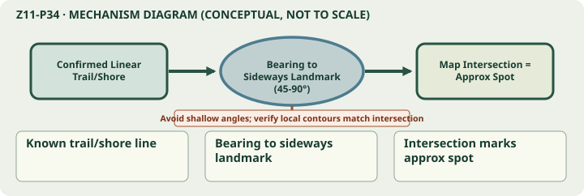

Z11-P34 · Navigation, weather and rescue · New manuscript
Narrow position along a trail or ridge using a single-feature resection
Pinpoint approximately where you stand along a known linear trail, shoreline or ridge using one unmistakable distant landmark.
When it applies · Confirming progress along a verified linear feature when one clear mapped peak, tower, island or inlet is visible.
Equipment · Oriented topographic map and baseplate compass with verified declination.

Actions
- Confirm positively which linear feature (trail, road, ridge crest or lakeshore) you are standing on right now.[N03, N01]
- Take a field-to-map compass bearing (clear of metal, adjusted for current declination) to one unmistakable distant mapped landmark located roughly sideways (ideally 45–90 degrees off your trail axis).[N08, T08]
- Lay the compass edge on the mapped landmark aligned with map north and trace back along the edge until it intersects your known trail or ridge—that intersection marks your approximate position.[N08, N03, ED]
Failure recognition · Sighting a landmark nearly straight ahead down the trail (shallow angle), where tiny compass error slides the intersection point half a mile along the line.[N08, N03]
Verify · Confirm surrounding slope direction, nearby stream crossings or contour shape matches the intersection point on the map.[N03, ED]
Stop or change course · If the landmark identity is uncertain (two similar peaks or islands) or terrain contradicts the intersection, treat position as unconfirmed until verified.[N03, T06]
Evidence and editorial notes
- N01 · USGS · US Topo Maps for America (current web edition)
- Section: US Topo Maps > Coordinate Grids, Scale and Currency · Conditions: Map reading and trip planning in the United States
Support: USGS topographic maps provide elevation contours, hydrography, roads, land cover and scale/date metadata; check publication date because trails, roads and structures change over time.
Limitations: Historical topo sheets (such as 1965 Ely quadrangle) illustrate symbols only and never establish current routes or declination. · Conflicting evidence: None; aligns with USGS-MAP-R and NOAA-D.
Editorial note: Grounds map margin, scale, date and historical-excerpt limits in Z11. · Specialist reviewer: Cartography and navigation
Primary source · checked 2026-11-24 - N03 · USGS · What is a Topographic Map (current web edition)
- Section: What is a Topographic Map > Contours and Relief · Conditions: Matching three-dimensional terrain shapes to two-dimensional contour lines
Support: Closed contour rings denote peaks or depressions (hachured), V-patterns point uphill in valleys/drainages and wide spacing marks gentle slopes while tight spacing marks cliffs or steep grades.
Limitations: Dense forest canopy or snow drifts can obscure subtle terrain features shown on the map. · Conflicting evidence: None; core topographic terrain-association evidence.
Editorial note: Supports ridge, valley, saddle and handrail terrain-interpretation cards. · Specialist reviewer: Navigation and cartography
Primary source · checked 2026-11-24 - N08 · NOAA NCEI · Magnetic Declination (current web edition)
- Section: Magnetic Declination > Local Anomalies and Compass Interference · Conditions: Using magnetic baseplate compasses near metal, electronics or iron-rich rock
Support: True north, grid north and magnetic north differ by local declination; additionally, nearby phones, vehicles, knives, steel poles and localized magnetic rock (e.g., northern Minnesota iron formations) deflect compass needles erratically.
Limitations: Never assume a compass needle reads true magnetic field while held near gear, vehicles or iron ore. · Conflicting evidence: Aligns with B014-P13 and B014-P14.
Editorial note: Grounds declination conversion, metal-clearance and magnetic-anomaly cards. · Specialist reviewer: Navigation and geophysics safety
Primary source · checked 2026-11-24 - T06 · NPS · Outdoor Emergency Plan (current web edition)
- Section: If you get lost or hurt; call for help · Conditions: Outdoor US emergency
Support: Communicate location, last known point, situation and needs. Stay put when unable to establish a safe route unless immediate danger requires movement.
Limitations: Cell signal is unreliable in backcountry terrain; pre-trip plans bridge communication gaps. · Conflicting evidence: None; core lost-person decision rule.
Editorial note: Foundation for stay/signal/move and dispatch handoff cards. · Specialist reviewer: Search and rescue
Primary source · checked 2026-11-24 - T08 · NOAA NCEI · Magnetic Declination (current web edition)
- Section: Definition and bearing conversion · Conditions: Trip planning with a map and compass
Support: Declination varies by date and geographic position. Determine the map reference and current local value.
Limitations: Outdated map margins can have meaningful declination drift over decades. · Conflicting evidence: None; retained for navigation reconstructions.
Editorial note: Preserved for Z11 continuity. · Specialist reviewer: Navigation and search and rescue
Primary source · checked 2026-11-24
Source lineage · USGS topo and compass orientation; new manuscript · Classification · New manuscript.